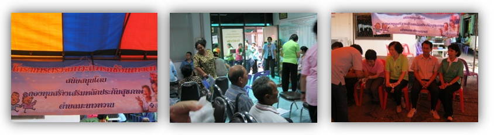
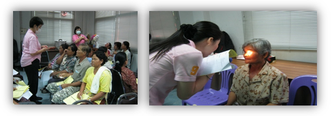

วันอาทิตย์ที่ 30 มกราคม 2554 โครงการป้องกันตาบอดและสายตาพิการจากโรคเบาหวาน องค์การบริหารส่วนตำบลโคก สลุง อำเภอพัฒนานิคม จังหวัดลพบุรี สมาคมพยาบาลเวชปฏิบัติทางตาร่วมออกหน่วยตามโครงการป้องกันตาบอดและสายตาพิการจากโรคเบาหวาน, ต้อหิน, ต้อกระจก
จำนวน 333 รายตรวจพบเป็น
| DR,PDR,mild PDR | 15 ราย |
| Pterygium | 65 ราย |
| AMD | 2 ราย |
| NO DR | 107 ราย |
| Cataract | 132 ราย |
| Glaucoma | 65 ราย |
| Cornea Scar | 2 ราย |
| Refer | 44 ราย |
วันที่ 11-13 กุมภาพันธ์ 2554 ประชุมฟื้นฟูวิชาการและเสริมทักษะการพยาบาล ปฏิบัติการสำหรับพยาบาลเวชปฏิบัติทางตาและพยาบาลทางตา ครั้งที่ 7 / 54 ณ โรงแรมเอเชียแอร์พอร์ต (ศูนย์การค้ารังสิต) ถนนวิภาวดี จังหวัดปทุมธานี เป็นเวลา 3 วันมีผู้เข้าประชุม 260 คน เรื่อง “Update in Ophthalmology for Ophthalmic Nurse Practitioner 2011”ในงานนี้นายกสภาการพยาบาลเป็นประธานพิธีเปิด และมอบรางวัล”คนดีศรีเวชตา” ให้แก่สมาชิกที่มีผลงานดีเด่น พร้อมทั้งการบรรยายเรื่อง ”ความก้าวหน้าทางวิชาชีพของพยาบาลเวชปฏิบัติทางตา”มีการบรรยายถึง” กฎหมายที่ต้องรู้สำหรับพยาบาลเวชปฏิบัติทางตา” น้ำตาเทียม,Corneal Ulcerและการใช้ Big eye ฯลฯ และการนำเสนอนวัตกรรมผลงานทางวิชาการจักษุ
วันที่ 20-24 มีนาคม 2554 ร่วมประชุมนานาชาติ APAO SYDNEY AUSTALIA
วันที่ 4-5 เมษายน 2554 ติดตามประเมินผลการดำเนินงานพัฒนาระบบฟื้นฟูสมรรถภาพ
คนตาบอดด้านทำความคุ้นเคย กับสภาพแวดล้อมและการเคลื่อนไหว O&M ปี 2553 – 2554 ณ
โรงแรมอามารี ดอนเมือง กรุงเทพฯ ซึ่งสมาคมพยาบาลเวชปฏิบัติทางตา อยู่ในฝ่ายทำการประเมินผล

วันเสาร์ที่ 9 เมษายน 2554 โครงการป้องกันตาบอดและสายตาพิการจากโรคเบาหวาน, ต้อหิน,
ต้อกระจก ที่ ต.มะนาวหวาน อ.พัฒนานิคม จ.ลพบุรี สมาคมพยาบาลเวชปฏิบัติทางตาและองค์การบริหารส่วนตำบลมะนาวหวาน ร่วมออกหน่วยตามโครงการป้องกันตาบอดและสายตาพิการจากโรคเบาหวาน,
ต้อหิน,ต้อกระจก จำนวน 239 รายตรวจพบเป็น
| Cataract | 102 ราย |
| Pingular | 79 ราย |
| Glaucoma | 13 ราย |
| Pterygium | 74 ราย |
และได้ส่ง Refer ไปยัง
| รพ.อนันทมหิดล | 1 ราย |
| รพ.พระพุทธบาท | 1 ราย |
| รพ.ศุภมิตร เสนา | 22 ราย |
| รพ.นรายณ์มหาราช | 16 ราย |
| รพ.พระมงกุฎเกล้า | 1 ราย |
| รพ.สระบุรี | 11 ราย |
และในช่วงการออกหน่วยเป็นช่วงสงกรานต์ชาวบ้านและบุคลากรได้จัดให้มีรดน้ำขอพรเนื่องในวันปีใหม่ไทยด้วย

วันเสาร์ที่ 28 พฤษภาคม 2554 โครงการป้องกันตาบอดและสายตาพิการจากโรคเบาหวาน, ต้อหิน,ต้อกระจก ที่ ต.น้ำสุด อ.พัฒนานิคม จ.ลพบุรี สมาคมพยาบาลเวชปฏิบัติทางตาและองค์การบริหารส่วนตำบลน้ำสุด ร่วมออกหน่วยตามโครงการป้องกันตาบอดและสายตาพิการจากโรคเบาหวาน,ต้อหิน,ต้อกระจก จำนวน 260 รายตรวจพบเป็น
| Cataract | 117 ราย |
| Pingular | 130 ราย |
| NPDR | 9 ราย |
| PDR | 1 ราย |
| Glaucoma | 6 ราย |
| Optic Atophy | 3 ราย |
| Sever NPDR | 1 ราย |
| CRVO | 1 ราย |
และได้ส่ง Refer ไปยัง
| รพ.อนันทมหิดล | 3 ราย |
| รพ.ศุภมิตร เสนา (ผ่าต้อกระจก) | 19 ราย |
| รพ.นรายณ์มหาราช | 9 ราย |
| รพ.สระบุรี | 14 ราย |
วันอาทิตย์ที่ 28 สิงหาคม 2554 โครงการป้องกันตาบอดและสายตาพิการจากโรคเบาหวานและความดันโลหิตสูง ที่ ต. ชอนน้อย สมาคมพยาบาลเวชปฏิบัติทางตาและองค์การบริหารส่วนตำบลน้ำสุด ร่วมออกหน่วยตามโครงการป้องกันตาบอดและสายตาพิการจากโรคเบาหวานและความดันโลหิตสูง
วันเสาร์ที่ 3 กันยายน 2554 โครงการป้องกันตาบอดและสายตาพิการจากโรคเบาหวานและความดันโลหิตสูง ที่ อบต.หนองบัว สมาคมพยาบาลเวชปฏิบัติทางตาและองค์การบริหารส่วนตำบลหนองบัว ร่วมออกหน่วยตามโครงการป้องกันตาบอดและสายตาพิการจากโรคเบาหวานและความดันโลหิตสูง